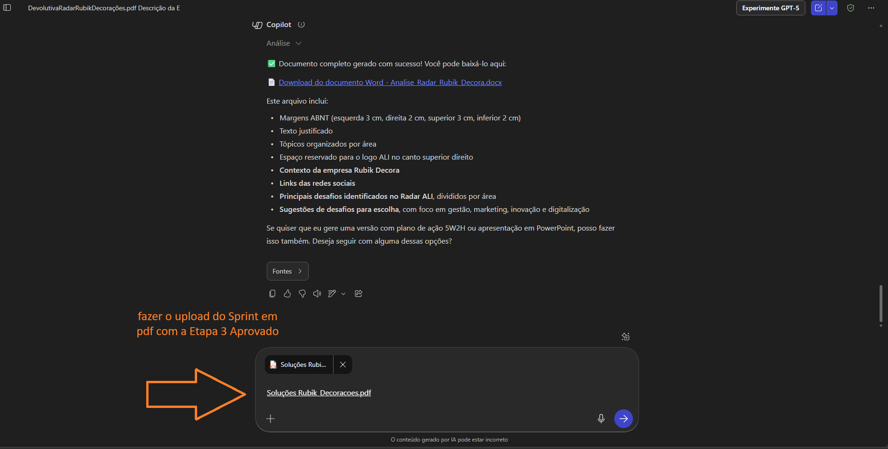
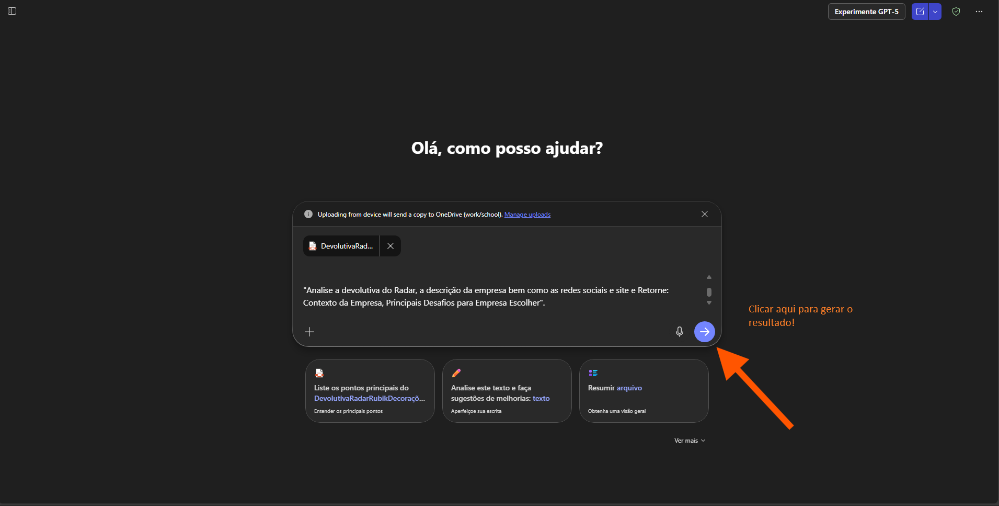
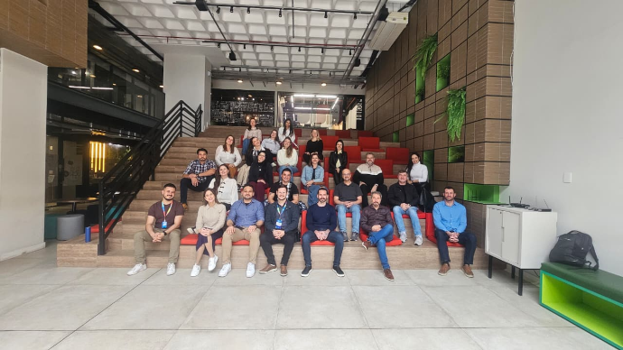

3° Prompt | Preparatório Etapa 4 Elaborar
Objetivo: Ajudar o Agente Local de Inovação a ofertar ideias de soluções para o desafio escolhido na etapa anterior, ou seja, Etapa 3 — Nomear. Com base na escolha, o objetivo é apresentar cerca de 10 opções de soluções criativas.
1° Passo: Na mesma conversa do Copilot, fazer o download do Sprint em PDF aprovado na 3ª etapa e seguir para o segundo passo.

2° Passo: Copiar o prompt abaixo e colar na conversa do Copilot, juntamente com os passos anteriores, e clicar em "OK".
PROMPT PREPARATÓRIO – ETAPA 4 | ELABORAR SOLUÇÕES. Atue como consultor do Sebrae com experiência em inovação, gestão e produtividade empresarial... ...mais

Equipe ALI-SC

